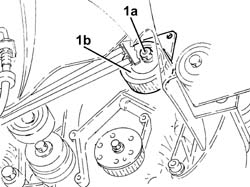
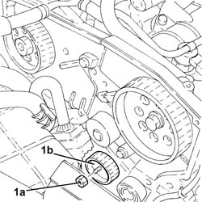
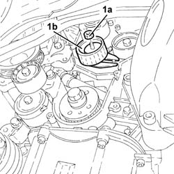

1032C10 MOVING TIMING TENSIONER - R.R. WITH TIMING BELT/CHAIN REMOVED
- Path
- Procedures > 10 ENGINE UNIT > 1032 TIMING SYSTEM > 1032C TIMING SYSTEM TENSIONERS > 1032C10 MOVING TIMING TENSIONER - R.R. WITH TIMING BELT/CHAIN REMOVED
- Kind
- repair procedure (removal / refitting; the operation number is the code)
- Applies to
- engines: 1.8 T.SPARK, 2.0 JTS, 1.9 JTD 16V; all production periods
- Interactive page
- https://sloeber94.github.io/elrnDB-aGt/en/#/125000970
Applies to: engines: 2.0 JTS; all production periods
 Removing
Removing
 Refitting
Refitting1. Completely undo the nut (1a) loosened previously and remove the timing belt moving tensioner (1b).

Applies to: engines: 2.0 JTS; all production periods
Refitting
RemovingFit the timing belt mobile tensioner and fix it using the nut without tightening it.
Applies to: engines: 1.9 JTD 16V; all production periods
Removing
Refitting1. Completely undo the nut (1a) loosened previously and remove the timing belt moving tensioner (1b).

Applies to: engines: 1.9 JTD 16V; all production periods
Refitting
RemovingFit the timing belt mobile tensioner and fix it using the nut without tightening it.
Applies to: engines: 1.8 T.SPARK; all production periods
Removing
Refitting1. Completely undo the nut (1a) loosened previously and remove the moving timing tensioner (1b).

Applies to: engines: 1.8 T.SPARK; all production periods
Refitting
RemovingFit the timing belt mobile tensioner and fix it using the nut without tightening it.